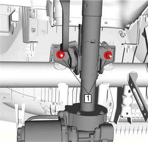
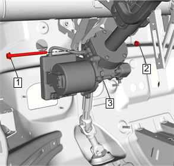

转向柱的更换
拆卸程序
告诫：
使车轮保持朝向正前位置，利用转向柱防转销、转向柱锁止装置或箍带固定方向盘以避免旋转。转向柱的锁止可防止辅助充气式约束系统 (SIR) 的损坏和可能出现的故障。断开以下部件之前，方向盘必须牢固就位：
转向柱
转向轴联轴节
中间轴
断开上述部件后，切勿旋转方向盘或移动前轮轮胎和车轮。不遵循这些程序会导致SIR线圈总成不对中，从而损坏SIR线圈。如果认为SIR线圈不对中，则参见规定的“辅助充气式约束系统 (SIR) 线圈对中程序”以重新对中SIR线圈。
告诫：
转向柱从车辆上拆下后极易损坏。如果转向柱端部朝下掉在地上，则可能损坏转向轴或使保持转向柱刚度的注塑件松动。倾靠在转向柱上会导致套管弯曲或变形。上述任何一种损坏都会损坏转向柱的可溃缩式设计。如需拆下方向盘，只能使用专用的方向盘拔出器。在任何情况下都不要向上敲击轴的端部，否则会使保持转向柱刚度的注塑件松动。
1.
断开蓄电池负极电缆并等待2分钟以解除车辆上的气囊。
2.
转向柱下装饰盖»拆下 –
转向柱下装饰盖的更换
3.
转向信号开关托架»拆下 –
转向信号开关托架的更换
4.
点火和起动开关壳体»拆下 –
点火和起动开关壳体的更换
5.
必要时，断开电气连接器。
6.
中间转向轴上螺栓»断开 –
中间转向轴的更换

7.
转向柱上螺母 (1)»拆下[2x]

8.
转向柱螺母(2)»拆下
9.
转向柱螺栓 (1)»拆下
10.
拆下转向柱 (3)»拆下
11.
必要时转移部件。
安装程序
注意:
•
在（使用工具）拧紧螺母之前，先用手拧紧所有螺母。
•
在安装过程中，不要弯曲位于上转向柱安装托架的吸能式转向柱扎带。
1.
转向柱 (3)»安装
2.
转向柱螺栓 (1)»安装
告诫：
有关紧固件的告诫
3.
转向柱螺母 (2)»安装并紧固
22N•m（16 lb ft）
4.
转向柱上螺母 (1) »安装并紧固[2x]
22N•m（16 lb ft）
5.
中间转向轴上螺栓»安装 –
中间转向轴的更换
6.
连接电气连接器。
7.
点火和起动开关壳体»安装 –
点火和起动开关壳体的更换
8.
转向信号开关托架»安装 –
转向信号开关托架的更换
9.
转向柱下装饰盖»安装 –
转向柱下装饰盖的更换